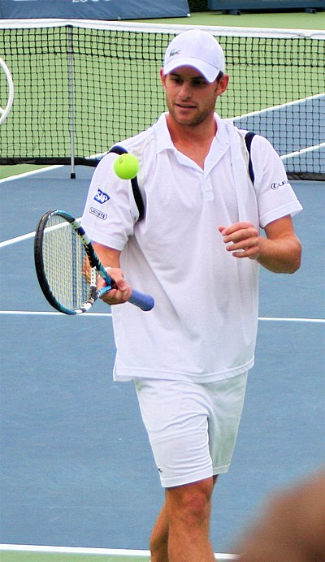
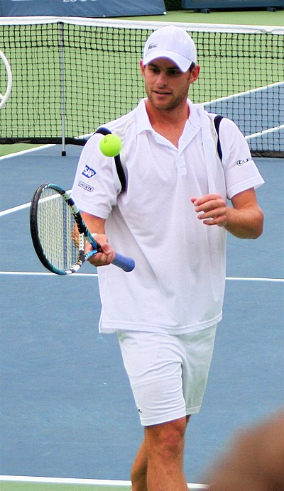

- Tennis info
- Tennis table
- Tennis vidio
BOVANDAKUTYUN
Tennis is a racket sport that is played either individually against a single opponent (singles) or between two teams of two players each (doubles). Each player uses a tennis racket that is strung with cord to strike a hollow rubber ball covered with felt over or around a net and into the opponent's court. The object of the game is to manoeuvre the ball in such a way that the opponent is not able to play a valid return . The player who is unable to return the ball validly will not gain a point , while the opposite player will.
.jpg) 


The rules of modern tennis have changed little since the 1890s . Two exceptions are that until 1961 the server had to keep one foot on the ground at all times,[6][7] and the adoption of the tiebreak in the 1970s.[8] A recent addition to professional tennis has been the adoption of electronic review technology coupled with a point-challenge system, which allows a player to contest the line call of a point, a system known as Hawk-Eye
| Year | Australian open | French open | Winbledon | Us open |
| 2022 | Rafael Nadali | Rafael Nadali | Novak Jokovich | Carlos Alcarez |
| 2021 | Novak Djokovic | Rafael Nadal | Dominic Thiem | Gustavo Kuerten |
| 2020 | Roger Federer | Rafael Nada | Andy Murray | Gustavo Kuerten |
| 2019 | Björn Borg | John McEnroe | Johan Krie | Johan Kriek |
| 2018 | Mervyn Rose | Nicola Pietrangeli | Frank Parke | Henri Cochet |